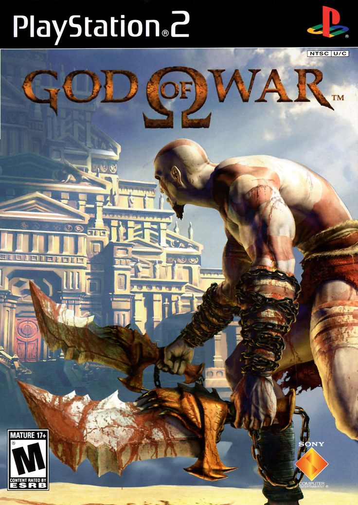
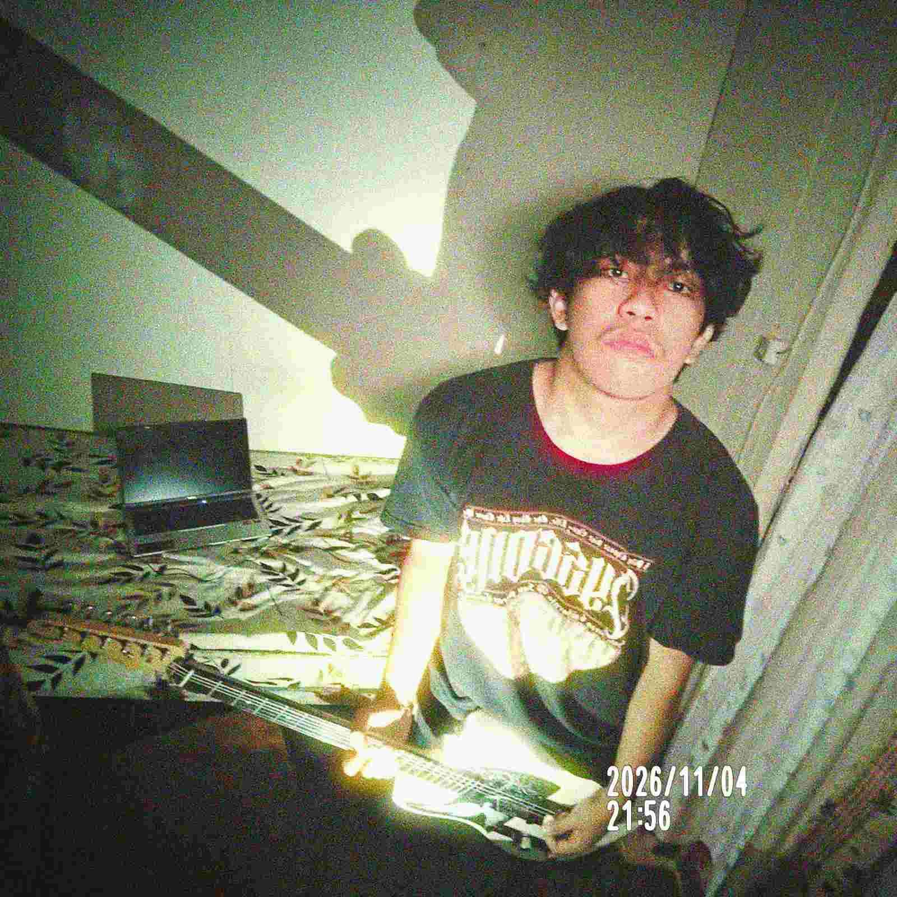
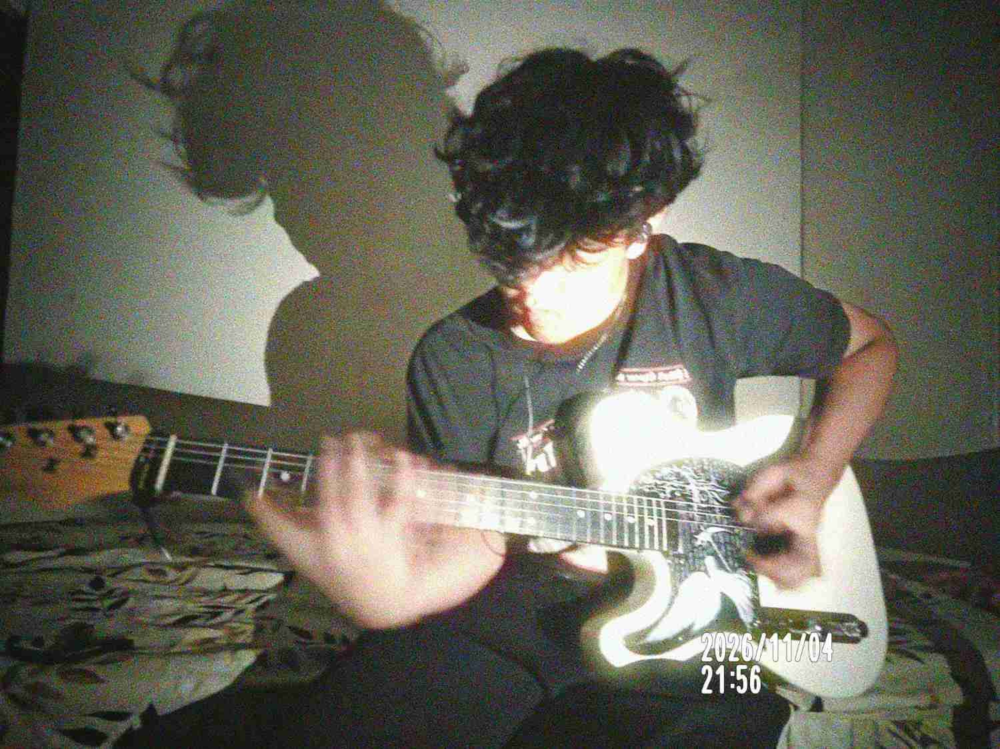
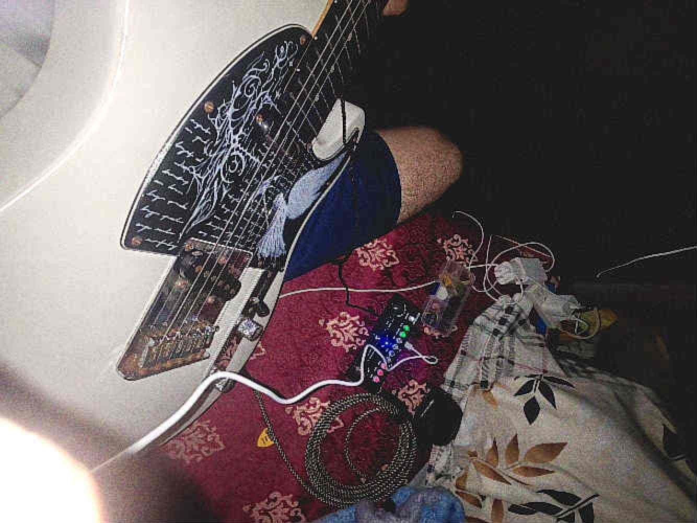
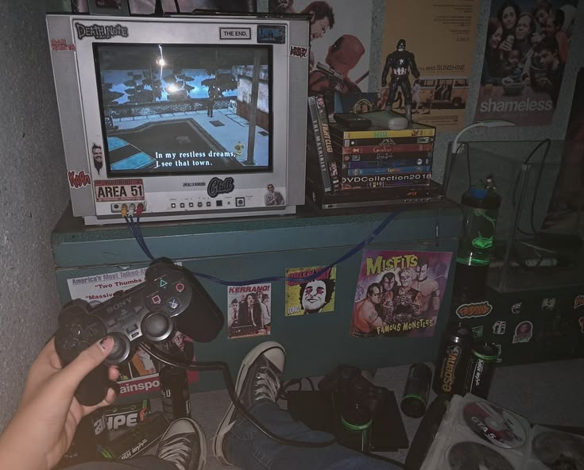
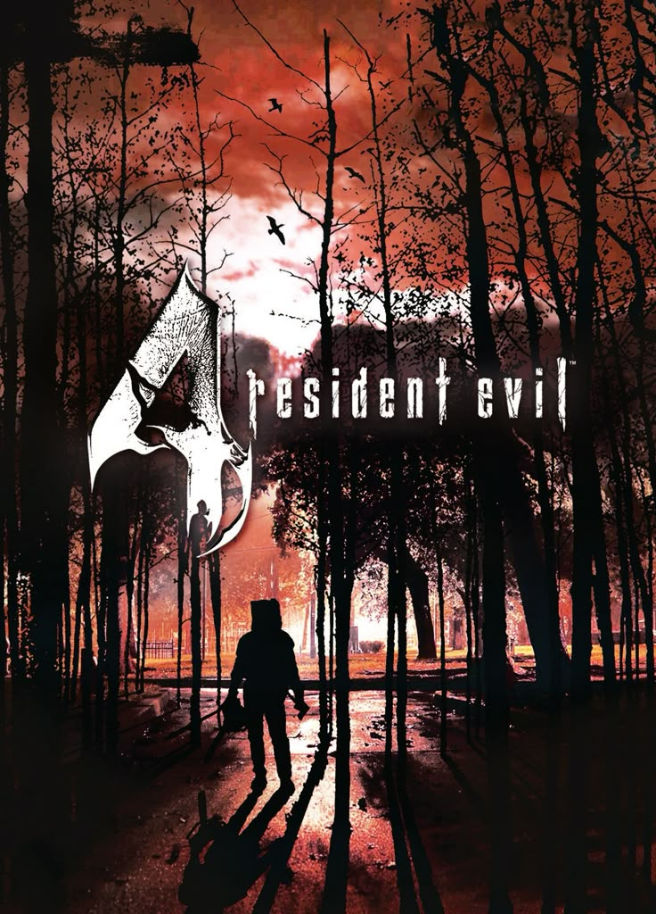
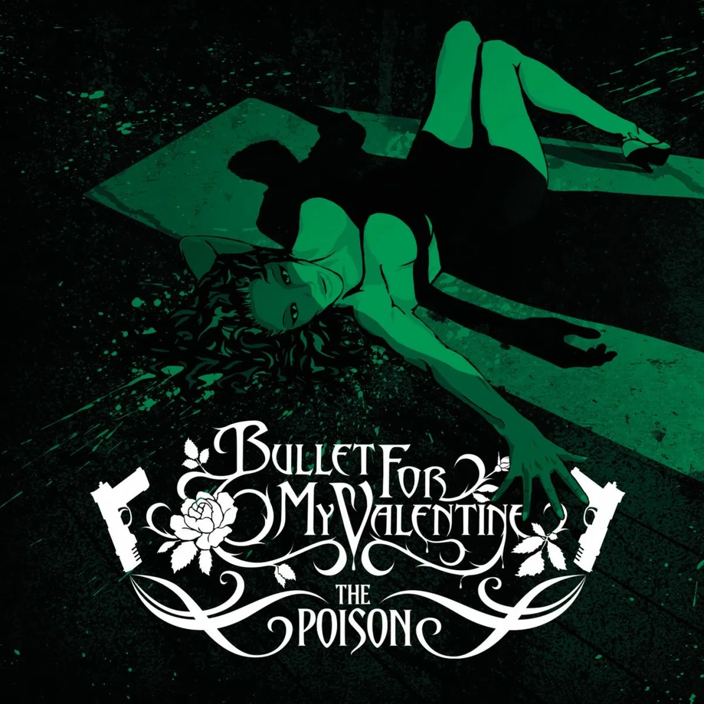
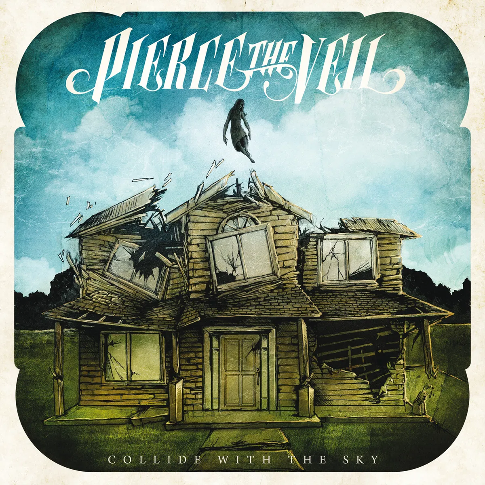

God Of War
A childhood game of mine that made me grind for hours(plus the story is very well-written).
WELCOME TO MY REALM!
"My soul is still stuck in the early 2000s."
Get to Know Me
*play this to set the mood*
I'm usually an introverted person when you first meet me, but once you get to know me, you might find me a little annoying. I have a variety of interests, including writing or listening to music, reading manga and different kinds of literature, and binge-watching anime, movies, and sometimes documentaries. During my free time, especially when I have nothing planned, I enjoy taking long walks and appreciating the beauty of nature. I also consider myself a bit of a geek when it comes to video games, particularly retro games. They have always been one of the things that catch my attention. When it comes to my personality, I can sometimes act immature, especially around people I feel comfortable with. However, I know when to be sensible and serious when a situation calls for it. I'm not usually very talkative, but I can become quite energetic and expressive when something genuinely interests me a lot.


My path into computing is a bit unusual. Unlike others who develop an interest in technology because of computers, mine actually started with video game emulation. Growing up, I spent a lot of time playing games from the sixth generation of consoles, particularly the PlayStation 2 and the original Xbox. As technology continued to advance, newer generations like the PlayStation 3 and Xbox 360 eventually replaced them. However, what caught my attention was how some people still wanted to preserve those older games and make them playable on newer hardware. This is where emulation comes in. Emulation is the technical process of making one computer system or device behave like another so it can run software originally designed for different hardware. In a way, it is like translating an old language into something a newer system can understand. I became curious about how this process works, how computers can imitate other machines, and what happens behind the scenes to make it possible. That curiosity gradually grew beyond video games and made me more interested in the technical side of computers and the digital world. I chose this program because I wanted to understand more about the technology I had been curious about for years. I also wanted to develop the skills and knowledge needed to explore how computers work, solve problems, and create things using technology. For me, choosing this program is a way to turn my curiosity into something I can learn from and hopefully use in the future. And that is how my journey into computing began.

Here are some games I enjoy playing.

A childhood game of mine that made me grind for hours(plus the story is very well-written).
A challenging game that ranks your play style and how you chain combos.

A game that blends horror with action (also the first franchise to implement the over-the-shoulder camera angle).
Here are some bands/musicians I enjoy listening to (also they are my inspirations to start making music).

Genre: Metalcore - This band was my gateway to learning how to play the guitar.

Genre: Post-Hardcore/Emo - This band was my introduction to my emo phase.
Genre: Hyperpop/Glitchpop - This guy made me explore more genres in music and influenced me to try open tunings.
Here are some of the things I enjoy and skills I am currently developing.
| Category | Favorites / Skills |
|---|---|
| Hobby | Playing guitar, writing and listening to music, reading, and playing video games |
| Interest | Game consoles and computers |
| Programming | C Programming and HTML |
| Skill | Logical thinking |
| Tools | C/C++,Visual Studio Code, and Notepad |
In the next few years, I hope to further develop and improve my skills in computing and programming so I can apply what I have learned to my everyday work and different experiences. I also want to become more perseverant and disciplined, reminding myself to keep working hard even when things become difficult. One of my goals is to create programs and work on projects that I can include in my portfolio, which may help me when applying for future jobs. I also hope to use my knowledge to help other people develop their own programs and bring their ideas to life. Aside from pursuing a career in computing, I would also like to become a part-time musician. I want to keep music as another path where I can express myself and explore my creativity, especially during times when I need a break from programming. Ultimately, I hope to build a future where I can pursue both my professional interests and personal passions."
Creating this webpage helped me understand how HTML and CSS work together to build a website. I learned how to organize information using different HTML elements, apply styles through an external CSS file, and arrange content using Flexbox. I also discovered the importance of designing a website that is simple, organized, and easy to navigate. While working on this activity, I improved my understanding of webpage structure, colors, spacing, and responsive design. I realized that web development requires both creativity and attention to detail. This activity also reminded me that learning something new takes practice, patience, and willingness to make mistakes.